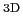
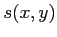

Next: The Iterative Scheme
Up: The Deblending Algorithm
Previous: Background
At the core of the QDeblend
 software tool, we used an improved iterative algorithm that was initiated by Christensen et al. (2006). The basic concept is to treat the spaxels () of the IFU datacube as a set of independent spectra
. The spectral shape of a point source is the same in each spaxel (in the absence of atmospheric dispersion), whereas the brightness is a function of position with scale factors  according to the Point Spread Function (PSF) of the observations. In the following we assume that the scale factors are normalised to one at the QSO position
.
While broad-band imaging studies typically use stars simultaneously observed within the field of the target to obtain an empirical PSF, current IFUs usually do not capture stars with the target due to their relatively small FOV of a few arcseconds. In the case of a broad-line AGN, scale factors for each spaxel can fortunately be estimated from the strength of the broad emission lines with respect to the adjacent continuum as presented by Jahnke et al. (2004) to reconstruct the scale factors at the wavelength of the chosen broad emission line (see Fig. 1 for illustration).
Figure:
Sketch of the broad line measurement in the case of H spectral region. Two adjacent continuum windows (green shaded areas) are defined to estimate a linear approximation of the local continuum (dashed line). To avoid contamination by a narrow H component one or two spectral windows at the H wings are selected and the flux is measured within these regions above the local continuum (red shaded areas).
|
|
On the other hand, the underlying continuum and line emission of the host may be spatially resolved and follow different distributions,  and
and  , which contribute both to the spectra of the IFU datacube:
, which contribute both to the spectra of the IFU datacube:
For simplicity we assume for the time being that the spectral shapes of the host spectrum and the emission line spectrum does not change in a datacube. We will relax and discuss this assumption later on.
Since we can easily construct the scale factors from the data itself, only the QSO spectrum
needs to be determined to separate
in a QSO and host galaxy term for each spaxel ( ,
, ). But how can we obtain a pure QSO spectrum without any contamination from resolved host emission? The spectrum at the QSO position, e.g. the brightest spaxel, should contain an almost pure S/N QSO spectrum
). But how can we obtain a pure QSO spectrum without any contamination from resolved host emission? The spectrum at the QSO position, e.g. the brightest spaxel, should contain an almost pure S/N QSO spectrum
under the condition that
This condition is certainly not fullfilled for low or intermediate luminosity QSOs so that the measured template QSO spectrum
will be inevitably contaminated by a significant fraction of host galaxy emission. Thus, the residual datacube
will be subject to an oversubtraction of the QSO component around the QSO position.
Next: The Iterative Scheme
Up: The Deblending Algorithm
Previous: Background
Bernd Husemann
2011-04-07